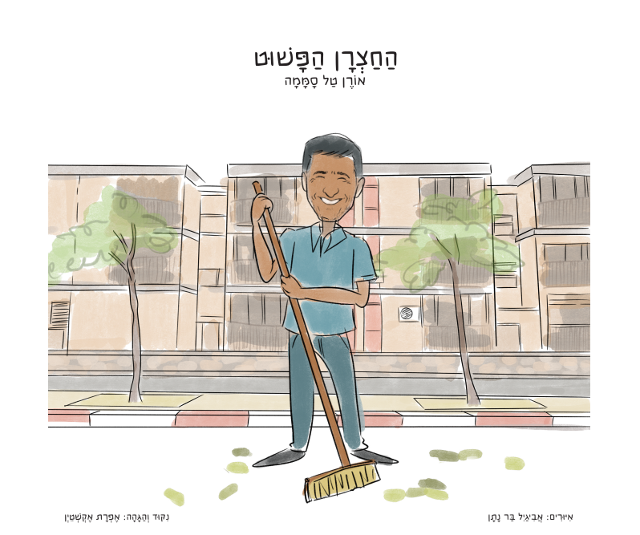
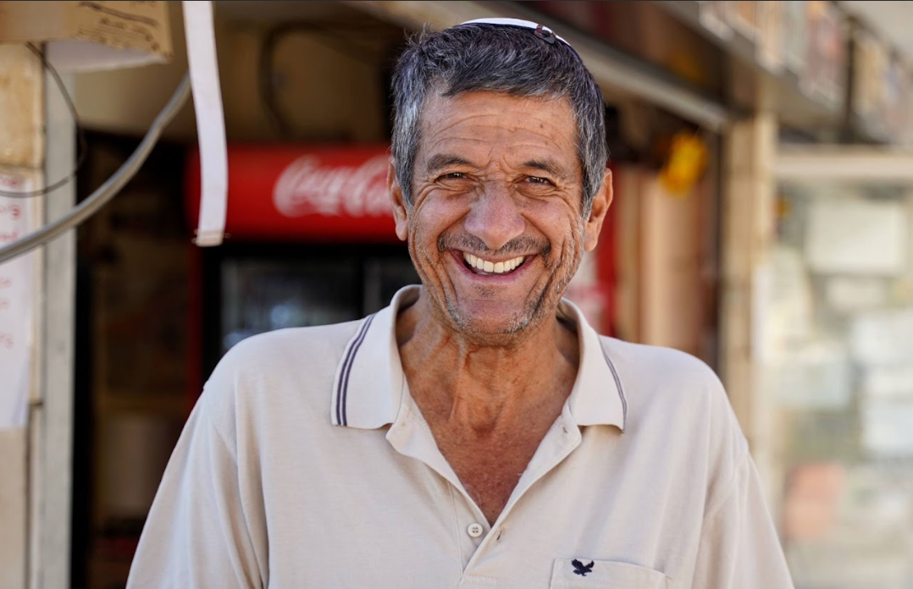

סיפורו של אדם שבלי הרבה מילים גבוהות, ובשפה פשוטה של הלב לימד את כולם את השיעור החשוב ביותר בחיים.
להזמנת הספר ←

אליהו סממה ז"ל עבד במשך 45 שנים כחצרן ואיש תחזוקה במפעל פניציה בירוחם. כל בוקר הגיע, כל יום עשה את עבודתו – בשקט, בסבלנות, ובחיוך שלא זז מפניו.
אבל הדבר האמיתי שאפיין את אבא שלי לא היה בתוך שערי המפעל. הוא היה ברחובות ירוחם.
"בפשטות, בצניעות ובשמחה הגדולה שלו – הלך תמיד עם חיוך על פניו, ומברך כל אדם שנקרא בדרכו. כך הייתה דרכו להאיר פנים."
אנשים פגשו אותו ברחוב ועצרו לדבר. לא כי היה להם עניין מיוחד – אלא כי ליד אליהו פשוט היה טוב. הוא ראה כל אחד. שמח עם כל אחד. הקשיב לכל אחד.
במהלך השבעה הגיעו אנשים רבים לספר על הקשר שלהם עם אבא. רבים סיפרו על המפגש המיוחד ברחוב, על הברכות ועל השמחה הפשוטה.
הספר הזה נכתב מתוך רצון לשמר את הפשטות שאפיינה את אבא – ומתוך תקווה שנזכה כולנו לדבוק בהארת פנים, בשמחה בחלקנו ובראיית האחר – מה שהיה אופייני כל כך לאבא.
"החצרן הפשוט" כתוב ומאויר כספר ילדים – אבל כמה שורות בדף הזה, ותבינו שהמסר שלו מגיע הרבה יותר עמוק מזה.
מחפשים מתנת סוף שנה שתישאר על השולחן ולא תגמר בארגז? הספר הזה מיועד לאנשים שמאמינים שיש ערך בפשטות ובאנושיות. מורים, גננות, מנהלים – הם יבינו מיד.
הסיפור פותח דלת לשיחה ערכית אמיתית – על כבוד לכל אדם, על ראיית האחר, על פשטות ושמחת חיים. מצוין לשעת ספרייה, שיעור ערכים ויום מיוחד.
ספר שמוביל לשיחה אמיתית. הילד שואל, ההורה מספר על אנשים שהכיר, ושניהם יוצאים ממנו עם משהו שישאר.
בעולם שרץ קדימה תמיד – הספר מזמין לנשום. לזכור שאדם שרואה את הזולת ושמח בחלקו הוא עשיר מכולם.
הורים, סבים, מורים ואנשים שקראו את הספר – ביקשו לספר:
"קראתי אתמול את הספר שכתבת לאבא שלך. במילה אחת, מרגש. בכמה מילים – מרגש מאוד. כתבת כ"כ יפה ותודה שנתת לנו הצצה באיזה אבא מדהים זכית."
"וואי לא ציפיתי. אני מקריאה לשחרי את הספר וכשמגיעה לאחד העמודים אני מתחילה לבכות תוך כדי. ריגשת בטירוף, מדויק להפליא ומשאיר חותם כ"כ מהמם על אבא שלך. אתה אלוף אורן! איזה כיף שהספר נשאר אצלי בבית."
"לפני כמה חודשים יהונתן הביא לנו את הספר. כשאשתי קראה אותו בפעם הראשונה לילדים היא לא הצליחה להשלים את הקריאה כי היא השתנקה מדמעות. שבת לאחר מכן קראתי את הספר ופשוט הדמעות לא הפסיקו לזלוג. הכתיבה כ"כ יפה והמסר כ"כ פשוט ואמיתי. בעינינו זה ספר חובה בכל גן. ובנימה אישית – אחרי הקריאה אני מרגיש פספוס גדול שלא הכרתי את אביך. אנשים כמוהו הם זן נדיר היום. תודה."
"הספר נפלא!!! ❤️ הקראתי לנכדות ונתתי מתנות לכל הילדים שלנו."
"רכשתי 3 ספרים וכל מי שמספר את הסיפור מוצא את עצמו בוכה. כל אחד לקח לביתו עותק ומצאתי את עצמי עדיין בחוסר – ללא ספר לביתי. ושתבין – הספר, או ליתר דיוק אביך, הוא אחת מהשיחות שחזרו על עצמן. בשורות טובות."
"קיבלתי בהתרגשות את הספרים שרכשתי לנכדי. יושבת בחתונה, רעש אימים מסביב – ואני שקועה בספר הפשוט והגאוני הזה. זה בכלל לא ספר ילדים – זה לגמרי בשבילנו ה״גדולים״. קניתי על עיוור בלי לדעת איזה אוצר זה. אשריך!"
"הרגע סיימתי לקרוא את הספר על אבא. אני פשוט יושבת ודומעת מהתרגשות. כמה כתבת פשוט מהלב והתוצאה מעבירה ללא ספק בדיוק את אביך האהוב. רואים פה אדם באמת מיוחד. זכיתם ממש באבא שחי את חייו הכי בשביל כולם. ולא פיספס אף אחד. מחכה כבר להקריא לנכדים שלי."
מנהלי בתי ספר, רכזי חינוך ומנהלים שבוחרים לתת מתנה שנשארת – בנינו עבורכם מתווה מיוחד לרכישות מרוכזות.
לתיאום הזמנה מוסדית – צרו קשר ישירות עם אורן: 054-2008230
ההזמנה מאובטחת ופשוטה. מלאו את הטופס ואנחנו נדאג לשאר.
למעבר לטופס הזמנה ←